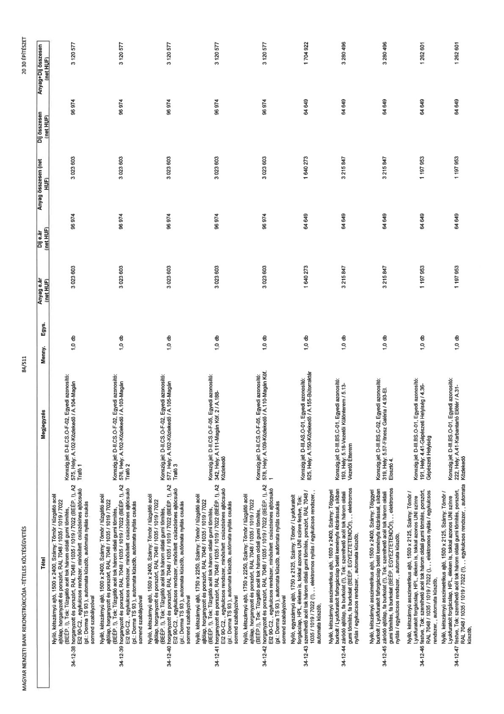

| Tétel | Megjegyzés | Menny. | Egys. | Anyag e.ár (net HUF) | Díj e.ár (net HUF) | Anyag összesen (net HUF) | Díj összesen (net HUF) | Anyag+Díj összesen (net HUF) |
|---|---|---|---|---|---|---|---|---|
| 34-12-38 | Nyíló, kétszárnyú ajtó, 1500 x 2400, Szárny: Tömör / tűzgátló acél ajtólap, horganyzott és porszórt, RAL 7048 / 1035 / 1019 / 7022 (BÉÉP: I), Tok: Tűzgátló acél tok három oldali gumi tömítés, horganyzott és porszórt, RAL 7048 / 1035 / 1019 / 7022 (BÉÉP: I), A2 EI2 90-C2,, egykulcsos rendszer, minősített csúszósínes ajtócsukó (pl.: Dorma TS 93), automata küszöb, automata nyitás csukás sorrend szabályzóval; Konszign.jel: D-II.CS.O-F-02, Egyedi azonosító: 575, Hely: A.102-Közlekedő / A.104-Magán Trafó 1 | 1,0 | db | 3 023 603 | 96 974 | 3 023 603 | 96 974 | 3 120 577 |
| 34-12-39 | Nyíló, kétszárnyú ajtó, 1500 x 2400, Szárny: Tömör / tűzgátló acél ajtólap, horganyzott és porszórt, RAL 7048 / 1035 / 1019 / 7022 (BÉÉP: I), Tok: Tűzgátló acél tok három oldali gumi tömítés, horganyzott és porszórt, RAL 7048 / 1035 / 1019 / 7022 (BÉÉP: I), A2 EI2 90-C2,, egykulcsos rendszer, minősített csúszósínes ajtócsukó (pl.: Dorma TS 93), automata küszöb, automata nyitás csukás sorrend szabályzóval; Konszign.jel: D-II.CS.O-F-02, Egyedi azonosító: 576, Hely: A.102-Közlekedő / A.103-Magán Trafó 2 | 1,0 | db | 3 023 603 | 96 974 | 3 023 603 | 96 974 | 3 120 577 |
| 34-12-40 | Nyíló, kétszárnyú ajtó, 1500 x 2400, Szárny: Tömör / tűzgátló acél ajtólap, horganyzott és porszórt, RAL 7048 / 1035 / 1019 / 7022 (BÉÉP: I), Tok: Tűzgátló acél tok három oldali gumi tömítés, horganyzott és porszórt, RAL 7048 / 1035 / 1019 / 7022 (BÉÉP: I), A2 EI2 90-C2,, egykulcsos rendszer, minősített csúszósínes ajtócsukó (pl.: Dorma TS 93), automata küszöb, automata nyitás csukás sorrend szabályzóval; Konszign.jel: D-II.CS.O-F-02, Egyedi azonosító: 577, Hely: A.102-Közlekedő / A.105-Magán Trafó 3 | 1,0 | db | 3 023 603 | 96 974 | 3 023 603 | 96 974 | 3 120 577 |
| 34-12-41 | Nyíló, kétszárnyú ajtó, 1750 x 2250, Szárny: Tömör / tűzgátló acél ajtólap, horganyzott és porszórt, RAL 7048 / 1035 / 1019 / 7022 (BÉÉP: I), Tok: Tűzgátló acél tok három oldali gumi tömítés, horganyzott és porszórt, RAL 7048 / 1035 / 1019 / 7022 (BÉÉP: I), A2 EI2 90-C2,, egykulcsos rendszer, minősített csúszósínes ajtócsukó (pl.: Dorma TS 93), automata küszöb, automata nyitás csukás sorrend szabályzóval; Konszign.jel: D-II.CS.O-F-05, Egyedi azonosító: 342, Hely: A.111-Magán Kőf. 2 / A.188-Közlekedő | 1,0 | db | 3 023 603 | 96 974 | 3 023 603 | 96 974 | 3 120 577 |
| 34-12-42 | Nyíló, kétszárnyú ajtó, 1750 x 2250, Szárny: Tömör / tűzgátló acél ajtólap, horganyzott és porszórt, RAL 7048 / 1035 / 1019 / 7022 (BÉÉP: I), Tok: Tűzgátló acél tok három oldali gumi tömítés, horganyzott és porszórt, RAL 7048 / 1035 / 1019 / 7022 (BÉÉP: I), A2 EI2 90-C2,, egykulcsos rendszer, minősített csúszósínes ajtócsukó (pl.: Dorma TS 93), automata küszöb, automata nyitás csukás sorrend szabályzóval; Konszign.jel: D-II.CS.O-F-05, Egyedi azonosító: 578, Hely: A.109-Közlekedő / A.110-Magán Kőf. 1 | 1,0 | db | 3 023 603 | 96 974 | 3 023 603 | 96 974 | 3 120 577 |
| 34-12-43 | Nyíló, egyszárnyú ajtó, 1750 x 2125, Szárny: Tömör / Lyukfuratolt forgácslap, HPL éleken is, tokkal azonos UNI színre festve, Tok: szerelhető acél tok három oldali gumi tömítés, porszórt, RAL 7048 / 1035 / 1019 / 7022 (),, elektromos nyitás / egykulcsos rendszer,, automata küszöb,; Konszign.jel: D-III.AS.O-01, Egyedi azonosító: 825, Hely: A.150-Közlekedő / A.155-Bútorraktár | 1,0 | db | 1 640 273 | 64 649 | 1 640 273 | 64 649 | 1 704 922 |
| 34-12-44 | Nyíló, kétszárnyú asszimetrikus ajtó, 1600 x 2400, Szárny: Tölgyyel burkolt / Lyukfuratolt faforgácslap betét keményfa élzárással, síkban záródó ajtólap, fa burkolat (!), Tok: szerelhető acél tok három oldali gumi tömítés, fa burkolat (BÉÉP: EGYEZTETENDŐ!),, elektromos nyitás / egykulcsos rendszer,, automata küszöb,; Konszign.jel: D-III.BS.C-01, Egyedi azonosító: 193, Hely: 5.18-Vezetői Különterem / 5.13-Vezetői Étterem | 1,0 | db | 3 215 847 | 64 649 | 3 215 847 | 64 649 | 3 280 496 |
| 34-12-45 | Nyíló, kétszárnyú asszimetrikus ajtó, 1600 x 2400, Szárny: Tölgyyel burkolt / Lyukfuratolt faforgácslap betét keményfa élzárással, síkban záródó ajtólap, fa burkolat (!), Tok: szerelhető acél tok három oldali gumi tömítés, fa burkolat (BÉÉP: EGYEZTETENDŐ!),, elektromos nyitás / egykulcsos rendszer,, automata küszöb,; Konszign.jel: D-III.BS.C-02, Egyedi azonosító: 319, Hely: 5.57-Fitnesz Galéria / 4.93-EI. Elosztó 4. | 1,0 | db | 3 215 847 | 64 649 | 3 215 847 | 64 649 | 3 280 496 |
| 34-12-46 | Nyíló, kétszárnyú asszimetrikus ajtó, 1500 x 2125, Szárny: Tömör / Lyukfuratolt forgácslap, HPL éleken is, tokkal azonos UNI színre festve, Tok: szerelhető acél tok három oldali gumi tömítés, porszórt, RAL 7048 / 1035 / 1019 / 7022 (),, elektromos nyitás / egykulcsos rendszer,, automata küszöb,; Konszign.jel: D-III.BS.O-01, Egyedi azonosító: 191, Hely: 4.41-Gépészeti Helyiség / 4.36-Gépészeti Helyiség | 1,0 | db | 1 197 953 | 64 649 | 1 197 953 | 64 649 | 1 262 601 |
| 34-12-47 | Nyíló, kétszárnyú asszimetrikus ajtó, 1500 x 2125, Szárny: Tömör / Lyukfuratolt forgácslap, HPL éleken is, tokkal azonos UNI színre festve, Tok: szerelhető acél tok három oldali gumi tömítés, porszórt, RAL 7048 / 1035 / 1019 / 7022 (),, egykulcsos rendszer,, automata küszöb,; Konszign.jel: D-III.BS.O-01, Egyedi azonosító: 222, Hely: A.41-Karbantartó Előtér / A.31-Közlekedő | 1,0 | db | 1 197 953 | 64 649 | 1 197 953 | 64 649 | 1 262 601 |
